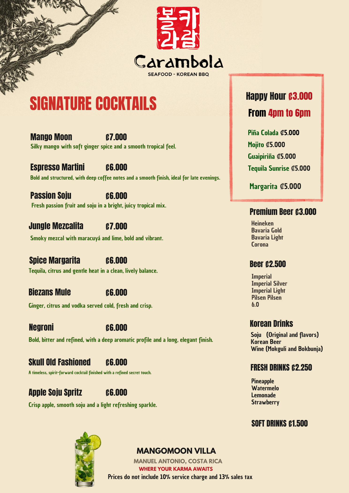
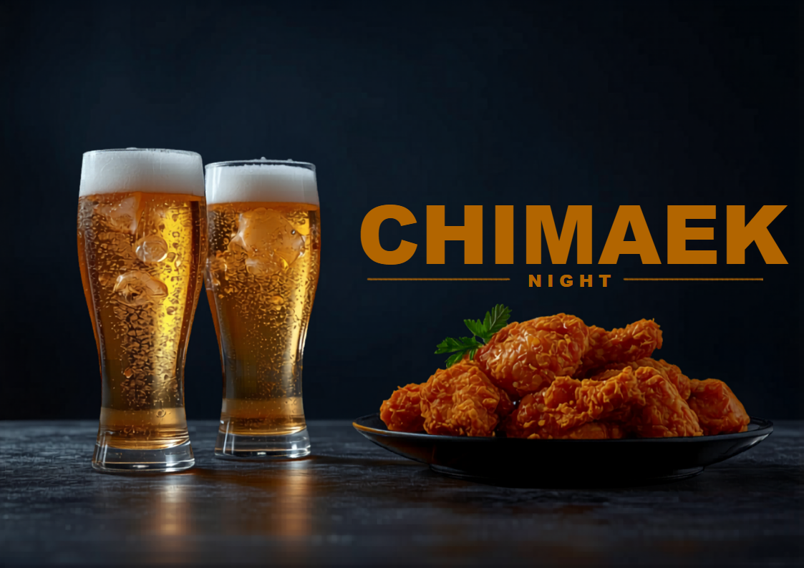

Proyectos y Trabajos Realizados
Projects & Work Portfolio
A lo largo de mi carrera he creado herramientas operativas y de gestión para los sectores inmobiliario, hotelero y turístico. Diseño sistemas funcionales que automatizan procesos, reducen errores y le ahorran horas de trabajo a los equipos.
Throughout my career I have created operational and management tools for the real estate, hospitality, and tourism sectors. I design functional systems that automate processes, reduce errors, and save teams hours of work.
Paradise Real Estate — Suite de Gestión Inmobiliaria
Paradise Real Estate — Real Estate Management Suite
Desarrollé para Paradise Real Estate un sistema integral en Excel que funciona como un CRM inmobiliario completo. Gestiona más de 30 propiedades con dueños, contratos, precios, comisiones y fechas de vencimiento. Incluye un algoritmo de matching que cruza propiedades con clientes asignando porcentajes de coincidencia. Incorpora un generador de descripciones con IA para textos de venta en español e inglés. Todo se controla desde un panel maestro sin tocar fórmulas.
I developed a comprehensive Excel system for Paradise Real Estate that works as a complete real estate CRM. It manages 30+ properties with owners, contracts, prices, commissions, and expiration dates. Includes a matching algorithm that cross-references properties with clients, assigning match percentages. Features an AI description generator for sales copy in English and Spanish. Everything is controlled from a master panel — no formulas to touch.

Portafolio de Propiedades
Property Portfolio

Matching Cliente-Propiedad
Client-Property Matching

Ficha de Control por Propiedad
Property Control Sheet

Generador de Textos con IA
AI Prompt Generator

Panel de Configuración Maestra
Master Configuration Panel
Herramientas Operativas para Hotelería y Restaurantes
Operational Tools for Hospitality & Restaurants
Para el sector de alimentos y bebidas desarrollé una suite de herramientas que resuelven problemas diarios. La calculadora de costos de coctelería fija precios automáticamente según ingredientes, tipo de cambio y margen. El recetario bilingüe funciona como carta profesional imprimible. El sistema de distribución de propinas cumple con la Ley No.10: ventas diarias, cálculo del 10%, pesos por área y redistribución automática en cortes quincenales.
For the food & beverage sector, I developed a suite of tools that solve daily problems. The cocktail cost calculator automatically sets prices based on ingredients, exchange rate, and margin. The bilingual recipe book works as a printable professional menu. The tip distribution system complies with Costa Rica's Law No.10: daily sales, 10% calculation, area weights, and automatic redistribution in bi-monthly pay periods.

Recetario de Cócteles Bilingüe
Bilingual Cocktail Recipe Book

Calculadora de Costos
Cost Calculator

Sistema de Propinas Ley No.10
Tip Distribution System (Law No.10)

Configuración de Personal
Staff Configuration

Resumen Financiero y Registro Anual
Financial Summary & Annual Register

Base de Datos de Insumos
Supplies Database
Diseño Gráfico, Brochures Digitales y Material Turístico
Graphic Design, Digital Brochures & Tourism Materials
Complemento mi trabajo operativo con diseño gráfico profesional en Canva. Creo brochures digitales, infografías educativas, cartas de presentación, menús y material publicitario para el sector turismo. Para el Parque Marino del Pacífico diseñé brochures informativos con datos de especies marinas y mensajes de conservación. Para la UNED desarrollé una infografía conceptual de app turística. Todo optimizado para imprimir y publicar en redes sociales.
I complement my operational work with professional graphic design in Canva. I create digital brochures, educational infographics, cover letters, menus, and advertising materials for the tourism sector. For the Pacific Marine Park I designed informational brochures with marine species facts and conservation messages. For UNED I developed a conceptual infographic for a tourism app. All optimized for print and social media publishing.
Brochure: Especies del Parque Marino
Brochure: Marine Park Species
Brochure: Normas y Conservación
Brochure: Rules & Conservation
Infografía: App Explorando Destinos
Infographic: Exploring Destinations App

Carta de Bebidas — Mango Moon Villa
Drink Menu — Mango Moon Villa



_page1.png)